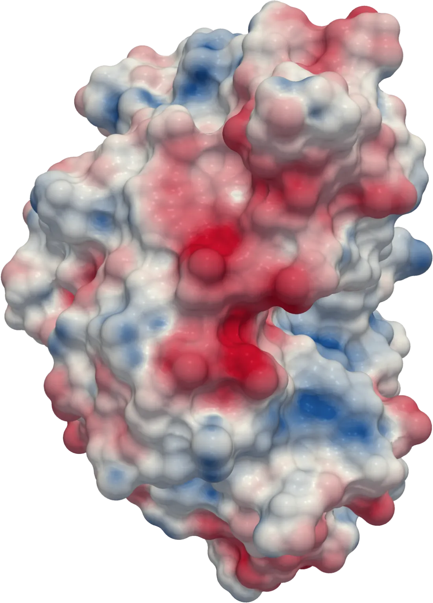

About
I’m a physicist turned computational scientist, driven by a simple ambition: turning the language of physics into algorithms that actually work on real, messy problems.
I hold a Ph.D. in Pure and Applied Mathematics from Politecnico di Torino, with a background that blends analytical rigour and numerical modelling. My main research focus is biomolecular electrostatics: the Poisson–Boltzmann equation, which describes how charged molecules behave in electrolytic environments. This work led to NextGenPB, a high-resolution finite element solver with analytical super-resolution that I developed from the ground up.
If you are interested in collaborations in computational physics, scientific machine learning or high-performance scientific software, feel free to reach out. My code is on GitHub.
- Now
- Post-doctoral research fellow, MOX, Politecnico di Milano (2025–)
- Ph.D.
- Pure and Applied Mathematics, Politecnico di Torino and IIT (2021–2025)
- Before
- M.Sc. Physics of Complex Systems, Torino · B.Sc. Physics, Trieste
- Software
- NextGenPB, Poisson–Boltzmann finite element solver
Research

Biomolecular electrostatics
The Poisson–Boltzmann equation for charged molecules in salt water. NextGenPB solves it with finite elements and a mesh that is fine only where the molecular surface is.
Physics-informed neural networks
PINNs and physics-guided networks applied to electrostatics: models that embed physical laws, so they predict accurately with limited data and stay physically consistent by design.
Non-equilibrium statistical mechanics
How complex systems evolve far from equilibrium, from heat conduction in one-dimensional chains to the Boltzmann equation, connecting rigorous results to realistic models.
Selected publications
All publications on Google Scholar- 2026
- 2026
- 2025
- 2024